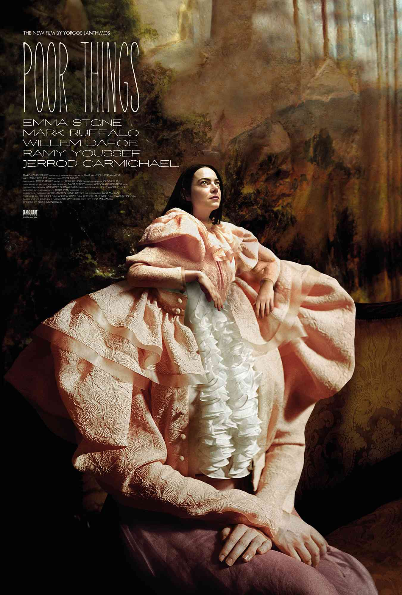

-

-
Do cineasta Yorgos Lanthimos e da produtora Emma Stone, chega a incrível história e a fantástica evolução de Bella Baxter (Stone), uma jovem trazida de volta à vida pelo brilhante e pouco ortodoxo cientista Dr. Godwin Baxter (Willem Dafoe). Sob a proteção de Baxter, Bella está ansiosa para aprender. Sedenta pela mundanidade que lhe falta, Bella foge com Duncan Wedderburn (Mark Ruffalo), um advogado elegante e debochado, em uma aventura turbulenta pelos continentes. Livre dos preconceitos de sua época, Bella se torna firme em seu propósito de defender a igualdade e a libertação.
Dirigido por
Yorgos Lanthimos
Roteiro por
Tony McNamara
Elenco
Emma Stone
Mark Ruffalo
Willem Dafoe
Ramy Youssef
Christopher Abbott
Suzy Bemba
Jerrod Carmichael
Kathryn Hunter
Vicki Pepperdine
Margaret Qualley
Hanna Schygulla
Produzido por
Ed Guiney p.g.a.,
Andrew Lowe p.g.a.,
Yorgos Lanthimos p.g.a.,
Emma Stone p.g.a.